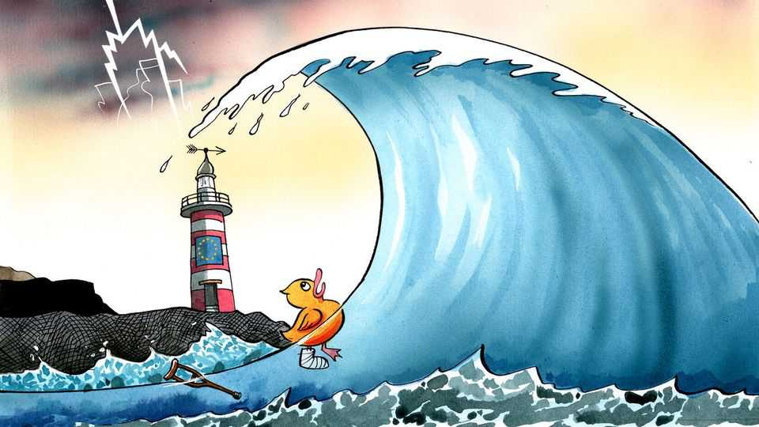

Europe’s lame-duck year could hardly come at a worse time
Elections will sap what little resolve Europe has to make tough decisions

Oct 8th 2026
Every organisation has an idle period when getting things done becomes all but impossible: universities feel eerily quiet over summer, most offices are dormant over Christmas. Europe may be entering such a period, but one that will last the best part of a year. On October 5th Pedro Sánchez, the embattled Spanish prime minister, called early elections that will be held in late November. The starting gun has thus been fired unexpectedly early on a marathon of voting, from France to Finland by way of Greece, Poland and Italy, that will see over half of all citizens of the European Union elect new national leaders between now and the end of 2027. Until the ballots are counted, almost every awkward decision at EU level will come with an irresistible alternative: wait until after the election. A continent confronted by war, weak growth and geopolitical upheaval is headed into enduring political paralysis at a painfully inopportune moment.
The gap between what Europe knows it ought to do and its willingness to do it is, to put it kindly, never narrow. Reports arguing that it urgently needs to reform its economy, bolster its defence capabilities and reform the union itself ahead of its potential enlargement have resulted in more felled forests than an IKEA superstore. Alas, all their lofty recommendations will now have to wait. One election-bound politician after another will plead with fellow leaders that they cannot possibly make contentious compromises, for example on the much-needed deepening of the EU’s single market, in the run-up to voting. The end result will be a sort of relay race of political mañana-ism as one campaign ends and the next begins. Even after the ballots are counted, more uncertainty will follow: in many places right-wing populists with little love for the EU will either win elections or become power brokers.
Thus the gap between Europe’s need to act and its ability to do so is becoming a veritable chasm. In part that is because the in-tray looks ever more daunting. Many of the old continent’s old problems remain unresolved even as new ones pile up. The EU is heading for winter with its lowest gas reserves since 2022, when Russia’s full-scale invasion of Ukraine triggered an energy crisis that never quite receded—and has been exacerbated by the war in Iran. High fuel prices have put the pinch on consumers. Europe’s solution to its economic woes has long been to import cut-rate wares from China while governments borrowed to fund generous welfare states without unduly taxing citizens.
That strategy is falling apart. Cheap Chinese imports are now seen as predatory in ways that threaten Europe’s industrial base. On October 15th EU leaders will meet to discuss whether to erect trade defences against China. The cheap credit some countries used to fund their deficits is a thing of the past, too. France is facing a bond-market squeeze as creditors demand higher yields to accept the risk of lending to a country that has not balanced a budget in over five decades. Having eschewed surpluses since the disco age, France is wildly unlikely to discover fiscal prudence before the first round of the presidential election in April. Even without elections the place seems barely governable, with students rioting for little discernible reason. Europe’s navel-gazing causes it to fall behind a bit more every day. While China and America are vying for supremacy in artificial intelligence, Europe has no model anywhere near the cutting edge. The EU’s next long-term budget is meant to boost its competitiveness, but a deal could be delayed amid overlapping campaign seasons.
None of this is entirely new: a union of many democracies inevitably entails a lot of voting. But geopolitical threats ought to concentrate European minds on how to make decisions, even as elections come and go. After a summer when Ukraine seemed to have turned the tables on Russia, it is once again being battered as winter looms. A €90bn ($101bn) slug of EU aid approved in late 2025 was meant to last two years. It now looks like more will be needed sooner. Vladimir Putin appears to have ambitions beyond Ukraine; intelligence agencies predict ever more hybrid attacks designed to sow discord within NATO. That ought to prompt Europeans to build up their collective defences, now that a flaky America is no longer a reliable security guarantor. Instead, Spain’s prime minister is campaigning on his refusal to do so. Spaniards will spend the next two months arguing about housing, and then forming a probably unstable coalition. Mr Putin is unlikely to stop blowing things up while Europe deals with its problems.
The paralysis that overcomes the European project when its politicians are out campaigning is one risk. Another is that the winners of the elections may rip up the blueprints. Spain’s election will not change Europe much, though it will probably oust the only socialist politician to lead one of its big countries. Few will notice which parties win in Finland in April. But Poland and particularly France could vote in populist-right leaders who so loathe the EU that it is hard to see how the bloc could remain effective. Marine Le Pen, the front-runner in French polls, wants to defund the union and cut back support to Ukraine.
Europe hardly needs elections to lapse into sclerosis. The urgency deficit has been evident throughout the past year, a period with few elections. And the string of ballots will not bring Europe entirely to a halt. Summits of EU leaders will still be held, regulations crafted, communiqués issued and so on. Crises have a way of focusing politicians’ minds even when they have one eye on the campaign trail. But responding to events is not the same as shaping them. At precisely the moment Europe needs to make big choices—on defence, competitiveness, trade and Ukraine—its leaders may be about to retreat into their political crouches and, for many months, make none at all.■